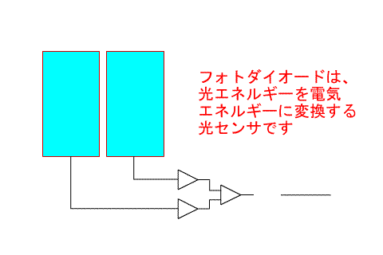
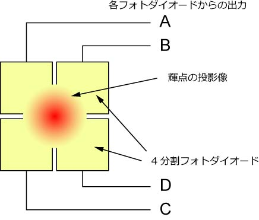

さて，原理上は光学顕微鏡の分解能の限界をうけずにナノメートルのオーダーで変位を計測することができることがわかりました．
では，どのようにして計測するのでしょう？
それは，
フォトダイオード
を用いるのです．
フォトダイオードとは，
光の量に比例して電流を発生する素子
です．
つまり，
光の量が増えると，発生する電流の値が増える
ものです．
このフォトダイオードを複数（２個もしくは４個）使って，輝点の重心位置の変化を計測するのです．
具体的なイメージは，以下のアニメーションをご覧ください．

このように，２分割，もしくは４分割のフォトダイオードを並べて，その差動出力から変位を電圧として（電流から電圧に変換して）計測するのです．
我々は元々，上村先生からこの手法を習いました．
彼らは分割フォトダイオードの代わりに，プリズムを用い，輝点からの光を２分していました．
さて，２分割フォトダイオードの場合，１次元の変位を計測できます．
その際の出力は，
Ａ－Ｂ
となります．
さて，４分割の場合はどうでしょう？
４分割では二次元の変位を計測できます．

Ｘ方向（画面の横方向とする）の変位は，
（Ａ＋Ｃ）－（Ｂ＋Ｄ）
Ｙ方向（画面の縦方向とする）の変位は，
（Ａ＋Ｂ）－（Ｃ＋Ｄ）
となりますね．
つまり，全部で６つのアンプを組んだ回路を作成しなくてはなりません．
しかし，回路が複雑になると，作成も大変だし，ノイズも増えてしまいます．
そこで，
Ａ－Ｄ
Ｂ－Ｃ
という対角線上の差動出力をまず取ります．
そして，それぞれの差，和，を取ると，
（Ａ－Ｄ）－（Ｂ－Ｃ）＝（Ａ＋Ｃ）－（Ｂ＋Ｄ） ＝＞ Ｘ方向の変位
（Ａ－Ｄ）＋（Ｂ－Ｃ）＝（Ａ＋Ｂ）－（Ｃ＋Ｄ） ＝＞ Ｙ方向の変位
となります．つまり４つのアンプですむのです．
輝点からの光はかなり微弱です．
ですので，電気回路でかなり増幅します．
その際に，発生するノイズを以下に低減するか，がこの計測の肝となります．
さて，次に，実際の差動出力がどのようなカーブになるかを計算してみましょう．